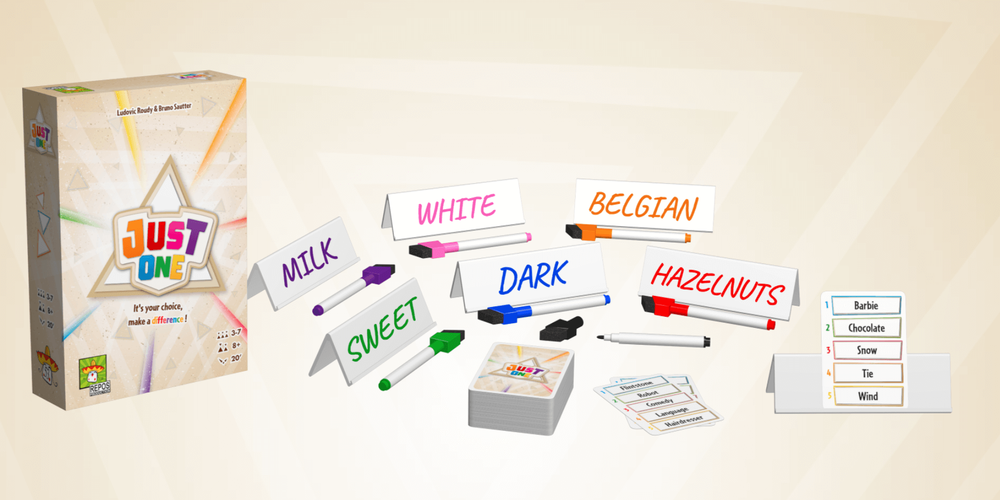
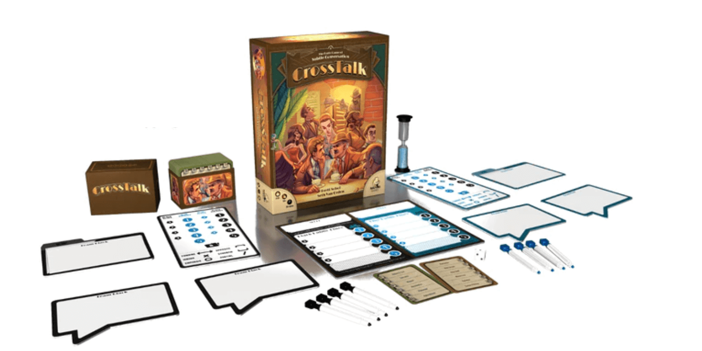
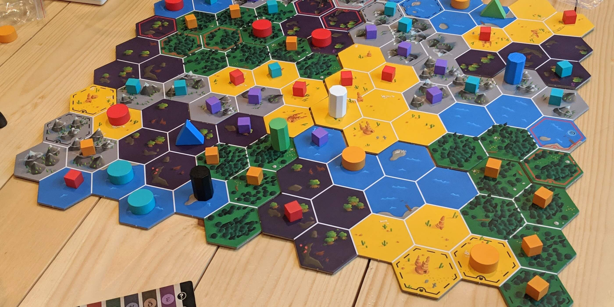

3 Great Deductive Reasoning Games like Codenames


Few games are more satisfying than Codenames when everything goes right for your team. It's hard to beat that feeling when you say "Pizza, 4" as spymaster and your team gets every guess correct.
If you are in need of another deductive reasoning game where you have to mind meld with your friends, these are the 3 to try next.
Just One

Just One is a more lighthearted word game where everyone works cooperatively. Instead of only two people being spymasters like in Codenames, players take turns being the "guesser" in Just One. Each round is also pretty quick, so there is less down time for everyone.
Without looking, the guesser draws a secret word card from the deck and shows it to the rest of the group. These players each write down just one word as clues for the guesser, and then they show their clues to each other. Any clues that match are discarded, and the guesser won't see them! It is entirely possible that only 1 or 2 clues will remain if the others matched up.
This can make the game much more challenging for the guesser, as they are allowed just one guess to determine the secret word! So will you choose an obscure clue to not conflict with others? Or will you go for an easier clue and hope others think differently? It's a mind game with everyone at the table, including yourself.
Just One is perfectly named, and it's such a simple game that all friends and family can be included. The goal is to guess as many words correctly in a row, everyone will want to keep trying to achieve a new high score.
Buy Just One on Amazon
Crosstalk
Crosstalk feels similar to Codenames, but both teams race to guess the same secret word instead of many different ones. Clues given by a spymaster in Codenames also don't usually help the opposing team, but that is not true in Crosstalk where subtlety is needed. These differences make for a more nuanced game of deception.
One player from each team act as spymasters and know the same secret word, which they want their team to guess. These two players also give their teams a starting private clue, hidden from the other team. Spymasters then take turns giving public clues, which both teams can see.
When a public clue is given, the opposing team will have a chance to guess the secret word to win. They often will not have enough information early on in the game though, so more public clues may be shared. The spymaster's challenge is to give clues that help their team without being too obvious to the opposing team. The private clues are the only differing pieces of information given to each team, but these are enough to turn Crosstalk into a serious mind game.
Crosstalk is a great game to try after Codenames, as it provides a familiar experience with added strategy. Both games are simple to set up and play, so give Crosstalk a try for your next word game!
Buy Crosstalk on Amazon
Cryptid
If being the Spymaster is your favorite part of Codenames, then Cryptid is for you. This is an expertly designed game of deductive reasoning in which players search for the cryptid, a mythical creature like the Loch Ness monster. Though it is not a word game, winning Cryptid will leave you feeling like you just figured out the perfect clue to give in Codenames.
The board is composed of habitat tiles which can be Water, Desert, Forest, Swamp, or Mountains. Only one tile is home to the cryptid, and each player receives a secret clue about its whereabouts. Your clue might say "within 1 tile of Mountains" or "in either Water or Desert."
Players take turns asking each other about their knowledge. I might ask, "Felicia, could the cryptid be here?" and point to a tile. Felicia must truthfully respond by placing a cube for "no" or a circle for "yes." The board will begin to fill up with information as more questions are asked.
Eventually, you may think you have deduced your opponents' clues and want to guess the cryptid's location. If you pick a spot and all players confirm that the cryptid can indeed live there, you win!
If Codenames is about finding one clue to relate many words, Cryptid is about finding the one location that satisfies all of the clues. This game is challenging, infinitely replayable, and always makes us marvel at how smart the designer must be.
Buy Cryptid on Amazon
Did we miss any good recommendations? Have other feedback for us? Send us an email at support@spiralburst.com and let us know!